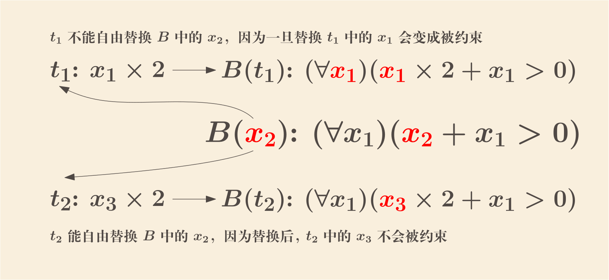
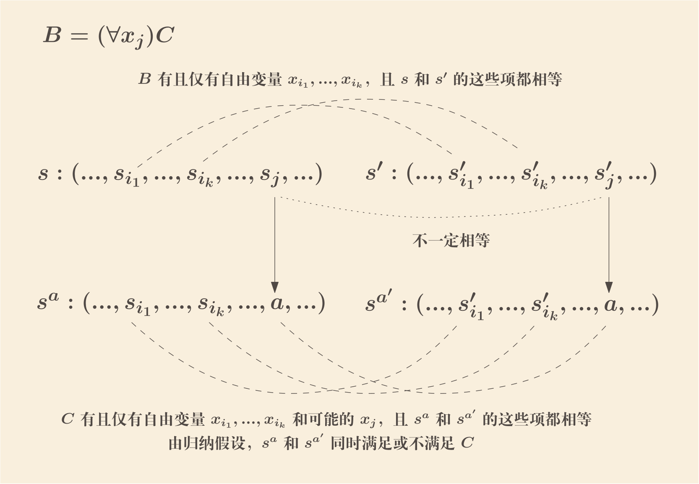
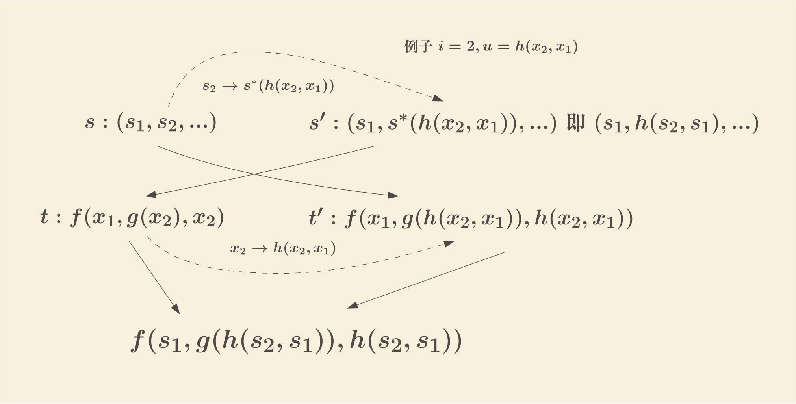
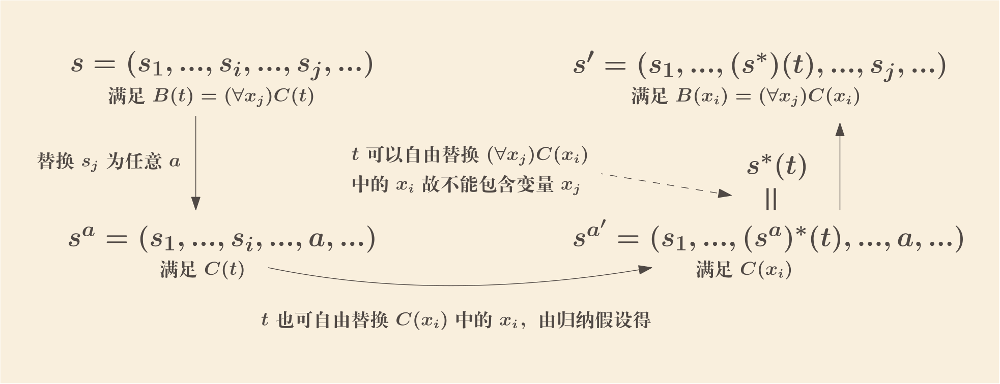

Chapter 2: First-Order Logic and Model Theory (2.1~2.2)
2022-01-13
一阶（谓词）逻辑
2.1 Quantifiers
- symbols
-
一阶符号包括以下这些
- 变量（Individual variables）: \(x_1, x_2, ..., x_n, ...\)
- 常量（Individual constants）: \(a_1, a_2, ..., a_n, ...\)
- 谓词/断言符号（Predicate letters）: \(A_1^m, A_2^m, ..., A_n^m, ...\)
- 函数符号（Function letters）: \(f_1^m, f_2^m, ..., f_n^m, ...\)
- \(() \neg \Rightarrow , \forall\) 联结词符号，这里基本跟命题逻辑是一样的，只是增加了 \(,\) 和 \(\forall\)
注：其中谓词符号和函数符号的上标表示其参数的数目，例如两个参数的二元谓词符号/二元函数符号
- Term
-
项（Term）定义为
- 常量变量都是项
- 如果 \(f_n^m\) 是一个函数符号，而 \(t_1, t_2, ..., t_m\) 是项，则 \(f_n^m(t_1, t_2, ..., t_m)\) 也是项
- 当且仅当一个表达式是由 1 或 2 构造出来时才是项
项类似于一般语言里的名词
- Atomic formulas
- 如果 \(A_n^m\) 是一个谓词符号，且 \(t_1, t_2, ..., t_m\) 是项，则 \(A_n^m(t_1, t_2, ..., t_m)\) 是原子式
- wffs
-
合式公式定义为
- 所有原子式都是合式公式
- 如果 \(B\) 和 \(C\) 是合式公式，\(y\) 是变量，则 \((\neg B)\)，\((B \Rightarrow C)\) 以及 \(((\forall y)B)\) 均是合式公式
- 当且仅当一个表达式是由 1 或 2 构造出来时才是合式公式
注：在 \(((\forall y)B)\) 中 \(B\) 是量词 \((\forall y)\) 的范围（scope），另外 \(B\) 不一定要包含 \(y\)， 在这种情况下，\(((\forall y)B)\) 等价于 \(B\)
其他联结词诸如 \((B \wedge C)\), \((B \vee C)\) 以及 \((B \Leftrightarrow C)\) 定义同上一章，\(((\exists x) B)\) 定义为 \((\neg ((\forall x)(\neg B)))\)
如果一个合式公式 \(B\) 中的变量 \(x\) 的所在（occurrence）出现在量词 \((\forall x)\) 中，或处于该量词范围中，则称该所在为有约束的（bound）， 否则称该所在是自由的（free）；注意如在 \(A_1^2(x_1, x_2) \Rightarrow (\forall x_1) A_1^1(x_1)\) 中的 \(x_1\) 那样，一个变量在一个合式公式 里可以同时有自由和约束的所在
如果一个变量在一个合式公式里有自由（约束）所在，则称该变量是自由（约束）的；故一个变量在一个合式公式里可以同时是自由和约束的
如果 \(B\) 是一个合式公式，\(t\) 是一个项，假如 \(B\) 中的一个变量 \(x_i\) 没有任意一个自由所在处于任何 \((\forall x_j)\) 的范围中 （其中 \(x_j\) 是 \(t\) 中的一个变量），则称 \(t\) 可以自由替换掉 \(x_i\) （\(t\) is said to be free for \(x_i\)）； 这里的意思是，如果将 \(t\) 替换到 \(B(x_i)\) 中所有 \(x_i\) 的自由所在成为 \(B(t)\)，\(t\) 中不会有变量因为如此而变得被约束了

以下这些很明显：
- 一个不包含任何变量的项可以自由替换掉任意合式公式中的任意变量
- 一个包含变量的项可以自由替换掉一个合式公式中的任意变量，如果该项中的变量都没有在该公式中被约束的话
- \(x_i\) 可以自由替换任意合式公式中的 \(x_i\)
- 任何项都可以自由替换一个合式公式中的 \(x_i\)，如果该公式中根本没有 \(x_i\) 的自由所在
2.2 First-Order Languages and Their Interpretations: Satisfiability and Truth: Models
一阶逻辑还需要给非逻辑符号赋予含义才能构成完整的一阶语言（First-Order Language）
- First order language
-
一个一阶语言 \(\mathcal{L}\) 包含以下语法符号
- 命题联接符 \(\neg\) 和 \(\Rightarrow\) 以及全称量词 \(\forall\)
- 一些标点符号：左右括弧 \(()\) 以及逗号 \(,\)
- 可数多的变量：\(x_1, x_2, ...\)
- 有限（甚至 0 个）或可数多的函数符号：\(f_1^n, f_2^n, ...\)
- 有限（甚至 0 个）或可数多的常量符号：\(a_1, a_2, ...\)
- 一个非空谓词符号集合（因为如果没有谓词的话也就没有任何的合式公式了）：\(A_1^n, A_2^n, ...\)
注：其中常量/函数符号/谓词符号称为 \(\mathcal{L}\) 中的非逻辑常量（nonlogical constant），
不同语言所使用符号所代表的可能完全不同的含义，例如一个算术语言中可能会使用 “+” “×” 作为函数符号，“=” 作为谓词符号； 而一个几何类的语言则可能会使用诸如 “平行” “相交” 等谓词
- Interpretation
-
一个一阶语言 \(\mathcal{L}\) 的语义解释（interpretation）1 \(M\)包括如下这些
- 一个非空集合 \(D\)，称为该解释的论域（domain）
- 对于每一个谓词符号 \(A_j^n\)，赋予一个 \(D\) 中的 \(n\) 元关系 \((A_j^n)^M\)，即 \(D^n\) 的一个子集
- 对于每一个函数符号 \(f_j^n\)，赋予一个 \(D\) 中的 \(n\) 元操作 \((f_j^n)^M\)，即从 \(D^n\) 到 \(D\) 的映射
- 对于每一个常量 \(a_i\)，赋予一个 \(D\) 中一个固定的元素 \((a_i)^M\)
对于一个解释来说，一个没有自由变量的公式（称为封闭公式或者句子 closed wf or sentence）代表了一个真/假命题， 一个有自由变量的公式则可能在一些取值下为可满足（satisfied），一些取值下不满足
可满足性以及真/假性可由以下更严密地定义（Tarski 1936），首先定义可满足性，真/假性由可满足性来进一步定义
首先对于一个有 \(n\) 个自由变量的公式，为方便统一故，我们不使用 n-tuple \(\langle s_1, s_2, ..., s_n \rangle\) 作为讨论对象， 而直接使用一个 denumerable sequence \(s = (s_1, s_2, ...)\) 作为讨论对象 （定义域为正整数的函数，该定义在书中 xxii 页，按我理解即直接拓展为可数无限长的 tuple）2
- \(s^{ * }(t)\)
-
若 \(s\) 是一个 denumerable sequence，即 \(s(i): Uint \rightarrow D\) 3，定义 \(s^{ * }(t): Term \rightarrow D\) 为
- 若 \(t\) 是变量 \(x_j\)，则 \(s^{ * }(x_j) = s(j)\)
- 若 \(t\) 是常量 \(a_j\)，则 \(s^{ * }(a_j) = (a_j)^M\)
- 若 \(t\) 形如 \(f_k^n(t_1, t_2, ..., t_n)\)，则 \(s^{ * }(f_k^n(t_1, t_2, ..., t_n)) = (f_k^n)^M (s^{ * }(t_1), s^{ * }(t_2), ..., s^{ * }(t_n))\)
从直观上说，\(s^{ * }\) 就是将 \(t\) 中的所有 \(x_j\) 替换成 \(s_j\) 并执行 \(t\) 中的所有函数操作最终得出一个 \(D\) 中的元素的操作
- Satisfiability
-
现在定义可满足性：对于一个合式公式 \(B\) 和一个 sequence \(s\) 来说
- 如果 \(B\) 是一个原子式 \(A_k^n(t_1, ..., t_n)\)，则当且仅当 \((A_k^n)^M(s^{ * }(t_1), ..., s^{ * }(t_n))\) 时，\(s\) 满足 \(B\) （反之则不满足）
- 当且仅当 \(s\) 不满足 \(B\) 时，\(s\) 满足 \(\neg B\)
- 当且仅当 \(s\) 不满足 \(B\) 或者 \(s\) 满足 \(C\) 时，\(s\) 满足 \(B \Rightarrow C\) （这里可以看出用 denumerable seq 的好处了：\(B\) 和 \(C\) 里的变量是可能不一样的）
- 当且仅当 \(s\) 替换掉其第 \(i\) 项为任意值都仍然满足 \(B\) 时，\(s\) 满足 \((\forall x_i)B\) 4
- Truth/Falsity
-
现在定义真/假性：在一个解释 \(M\) 下，令 \(\Sigma\) 为所有 \(s\) 的集合
- 当且仅当 \(\Sigma\) 中任意一个 \(s\) 都满足 \(B\)，则称 \(B\) 在 \(M\) 中为真，记作 \(\vDash_{M} B\)5
- 当且仅当 \(\Sigma\) 中没有一个 \(s\) 满足 \(B\)，则称 \(B\) 在 \(M\) 中为假
- 对于一个合式公式集合 \(\Gamma\)，当且仅当其中任意一个公式 \(B\) 在 \(M\) 中都是真时，称 \(M\) 是 \(\Gamma\) 的一个模型（model）
以下这些特性在此定义下皆能成立
当且仅当 \(\neg B\) 是真时，\(B\) 是假的；当且仅当 \(\neg B\) 是假时，\(B\) 是真的
- \(\neg B\) 为真等价于所有 \(s\) 满足 \(\neg B\) 当且仅当所有 \(s\) 不满足 \(B\) 等价于 \(B\) 为假
- \(\neg B\) 为假等价于所有 \(s\) 不满足 \(\neg B\) 当且仅当所有 \(s\) 满足 \(\neg\neg B\) 等价于 \(B\) 为真（这里需要有 \(\neg\neg B = B\)）
\(\vDash_M B\) 和 \(\vDash_M \neg B\) 不能同时为真
如果同时为真，对于一个 \(s\) 来说，就既满足 \(B\) 又不满足 \(B\) 了，这是不可能的
如果 \(\vDash_M B\) 且 \(\vDash_M B \Rightarrow C\)，则 \(\vDash_M C\)
如果一个 \(s\) 同时满足 \(B\) 和 \(B \Rightarrow C\)，则 \(s\) 也满足 \(C\)，因为 \(s\) 满足 \(B \Rightarrow C\)， 所以 \(s\) 满足 \(C\) 或者 \(s\) 不 满足 \(B\)，但 \(s\) 满足 \(B\)，故 \(s\) 只能满足 \(C\)
当且仅当 \(\vDash_M B\) 且 \(\vDash_M \neg C\) 时，\(B \Rightarrow C\) 为假
任意一个 \(s\) 都满足 \(B\) 且不满足 \(C\)，故不满足 \(B \Rightarrow C\)
其他联结词
当且仅当 \(s\) 满足 \(B\) 和 \(C\) 时，满足 \(B \wedge C\)
\(s\) 满足 \(\neg (B \Rightarrow \neg C)\) 当且仅当不满足 \(B \Rightarrow \neg C\)，当且仅当 \(s\) 满足 \(B\) 且不满足 \(\neg C\)， 当且仅当 \(s\) 同时满足 \(B\) 和 \(C\)
当且仅当 \(s\) 满足 \(B\) 或 \(C\) 时，满足 \(B \vee C\)
\(s\) 满足 \((\neg B) \Rightarrow C\) 当且仅当 \(s\) 不满足 \(\neg B\) 或满足 \(C\)，当且仅当 \(s\) 满足 \(B\) 或 \(C\)
当且仅当 \(s\) 同时满足 \(B\) 和 \(C\)，或者同时不满足 \(B\) 和 \(C\) 时，满足 \(B \Leftrightarrow C\)
\(s\) 满足 \(B \Leftrightarrow C\) 当且仅当 \(s\) 满足 \(B \Rightarrow C\) 和 \(C \Rightarrow B\)， 当且仅当 \(B\) 和 \(C\) 同时满足或同时不满足，否则总可以有 \(T \Rightarrow F\)
当且仅当存在一个 \(c\) 替换掉 \(s\) 的第 \(i\) 项后满足 \(B\) 时，\(s\) 满足 \((\exists x_i)B\)
\(s\) 满足 \(\neg (\forall x_i)\neg B\) 当且仅当 \(s\) 不满足 \((\forall x_i)\neg B\)， 当且仅当至少存在一个 \(c\) 替换掉 \(s_i\) 后不满足 \(\neg B\)，当且仅当至少存在一个 \(c\) 替换掉 \(s_i\) 后满足 \(B\)
\(\vDash_M B\) 当且仅当 \(\vDash_M (\forall x_i)B\)
\(\vDash_M B\) 时任意 \(s\) 都满足 \(B\)，自然对任意 \(s\) 替换其 \(s_i\) 为任意值仍然满足 \(B\)， 故 \(\vDash_M (\forall x_i)B\)；当 \(\vDash_M (\forall x_i)B\) 时任意 \(s\) 替换 \(s_i\) 为任意值仍然满足 \(B\)，这也意味着任意 \(s\) 均满足 \(B\)，即 \(\vDash_M B\)
这个结果可以扩展为 \(B\) 为真当且仅当其闭包（closure，即在 \(B\) 前添加所有自由变量全称量词前缀，例如 \(A_1^2(x_2, x_5)\) 的闭包为 \((\forall x_5)(\forall x_2)A_1^2(x_2, x_5)\)）为真
所有重言式在任何解释下都是真的
例如 A1 的一个实例可以是 \(A_1^1(x_1) \Rightarrow (A_1^1(x_2) \Rightarrow A_1^1(x_1))\)； 对 \(L\) 的三条公理来说，任意 \(s\) 都是满足的，故这几个公理总是真的，又根据性质 3 MP 保真，故所有 \(L\) 中的定理均真； 又由 Proposition 1.14 所有重言式均是定理，故总是真的
若 \(B\) 有且仅有自由变量 \(x_{i_1}, ..., x_{i_k}\)，又 \(s\) 和 \(s'\) 的第 \(i_1, ..., i_k\) 项均相等， 那么 \(s\) 满足 \(B\) 当且仅当 \(s'\) 满足 \(B\)
首先证明一个 Lemma： 若项 \(t\) 包含的变量均在一个集合 \(\{x_{i_1}, ..., x_{i_k}\}\) 中，而 \(s\) 和 \(s'\) 的 第 \(i_1, ..., i_k\) 项均相同，则 \(s^{ * }(t) = (s')^{ * }(t)\)
以 \(t\) 中函数符号数目作归纳法：
- 函数符号数目为 0 时可能为常量或者变量：
- 若 \(t\) 是常量 \(a_j\)，由定义知 \(s^{ * }(a_j)\) 和 \((s')^{ * }(a_j)\) 均是 \((a_j)^M\)，故 \(s^{ * }(t) = (s')^{ * }(t)\)
- 若 \(t\) 是变量 \(x_{i_j}\) （其中 \(1 \le j \le k\)），由于 \(s_{i_j}\) 和 \(s'_ {i_j}\) 相等，故 \(s^{ * }(t) = (s')^{ * }(t)\)
- 若 \(t\) 形如 \(f_m^n(t_1, ..., t_n)\)，显然任意 \(t_i\) 的函数符号数目比 \(t\) 的为少，故由归纳假设得 \(s^{ * }(t_i) = (s')^{ * }(t_i)\)， 故 \((f_m^n)^M (s^{ * }(t_1), ..., s^{ * }(t_n)) = (f_m^n)^M ((s')^{ * }(t_1), ..., (s')^{ * }(t_n))\)，亦即 \(s^{ * }(f_m^n(t_1, ..., t_n)) = (s')^{ * }(f_m^n(t_1, ..., t_n))\)
现在以 \(B\) 中联接符和量词数目作归纳法证明：
联接符和量词数目为 0 时，即是原子式 \(A_m^n(t_1, ..., t_n)\)，自由变量为各项中的自由变量， 若 \(s\) 和 \(s'\) 的这些项均相等，则由上面 Lemma 得出 \(\langle s^{ * }(t_1), ..., s^{ * }(t_n) \rangle = \langle (s')^{ * }(t_1), ..., (s')^{ * }(t_n) \rangle\)， 故 \(s\) 和 \(s'\) 总是同时满足或不满足 \(B\)
若 \(B\) 形如 \(\neg C\)，自由变量为 \(C\) 中的自由变量，若 \(s\) 和 \(s'\) 的这些项均相等，则由归纳假设（\(C\) 的联结词和量词数目比 \(B\) 少） 得 \(s\) 和 \(s'\) 总是同时满足或不满足 \(C\)，于是也就总是同时不满足或者满足 \(B\)
若 \(B\) 形如 \(C \Rightarrow D\)，自由变量为 \(C\) 和 \(D\) 中自由变量的并集，若 \(s\) 和 \(s'\) 的这些项均相等， 则由归纳假设（\(C\) 的联结词和量词数目比 \(B\) 少）得 \(s\) 和 \(s'\) 总是同时满足或同时不满足 \(C\)， 同理 \(D\)，故也就同时满足或者不满足 \(B\)
若 \(B\) 形如 \((\forall x_j)C\) ，有且仅有自由变量 \(x_{i_1}, ..., x_{i_k}\)，且 \(\langle s_{i_1}, ..., s_{i_k} \rangle = \langle s'_{i_1}, ..., s'_{i_k} \rangle\)； 易知 \(C\) 中包含自由变量 \(x_{i_1}, ..., x_{i_k}\) 以及可能的自由变量 \(x_j\)（且 \(j\) 不同于任意 \(i_n\)， 否则 \(B\) 中该下标的变量就不自由了）；对于任意值 \(a\)，将 \(s\) 的 \(s_j\) 替换为 \(a\) 得到 \(s^{a}\)， 将 \(s'\) 的 \(s'_j\) 替换为 \(a\) 得到 \(s^{a'}\)，由归纳假设 （\(C\) 的联结词和量词数目比 \(B\) 少且 \(s^{a}\) 和 \(s^{a'}\) 在 \(C\) 中自由变量均相等） 得出 \(s^{a}\) 和 \(s^{a'}\) 同时满足或不满足 \(C\)； 若 \(s\) 满足 \(B\)，则任意 \(s^{a}\) 都满足 \(C\)，则任意 \(s^{a'}\) 都满足 \(C\)，也就是 \(s'\) 满足 \(B\) 了； 若 \(s\) 不满足 \(B\)，则存在一个 \(a\) 使得 \(s^{a}\) 不满足 \(C\)，也就 \(s^{a'}\) 不满足 \(C\)，故 \(s'\) 不满足 \(B\)

令 \(B(x_{i_1}, ..., x_{i_k})\) 是一个有且仅有 \(x_{i_1}, ..., x_{i_k}\) 这些自由变量的合式公式，所有满足之的 k-tuple \(\langle b_1, ..., b_k \rangle\) 的集合称之为由 \(B\) 定义的关系（或如果 \(k=1\)，亦可称为属性）， 这样的 k-tuple 记作 \(\vDash_M B[b_1, ..., b_k]\)
- 函数符号数目为 0 时可能为常量或者变量：
如果 \(B\) 是封闭式子（没有自由变量），则对于任意解释 \(M\) 下，要么 \(\vDash_M B\)，要么 \(\vDash_M \neg B\)：
由 8 得出任意 \(s\) 和 \(s'\) 要么同时满足 \(B\)，要么同时不满足 \(B\)，由是要么所有 sequence 都满足 \(B\) 要么没有 sequence 满足 \(B\)，即要么是真的要么是假的；
假如项 \(t\) 可以自由替换 \(B(x_i)\) 中的 \(x_i\)，那么在任意解释下 \((\forall x_i)B(x_i) \Rightarrow B(t)\) 为真：
证明基于如下两个 Lemma
Lemma 1：\(u\) 是一个项，\(t\) 也是一个项，\(t'\) 是将 \(t\) 中所有 \(x_i\) 替换为 \(u\) 所得； \(s\) 是一个 sequence，\(s'\) 是将 \(s\) 的第 \(i\) 项替换为 \(s^{*}(u)\) 所得； 那么有 \(s^{*}(t') = (s')^{*}(t)\)
以 \(t\) 中函数符号数目归纳：- 当 0 时，有三种情况
- \(t\) 是单个常量 \(a_i\)，由于任意 \(s^{*}(a_i)\) 都是 \((a_i)^M\) 故相等
- \(t\) 是单个变量 \(x_j\) 且 \(j \ne i\)，则 \(t'=t=x_j\)，故 \(s^{*}(t')=s^{*}(x_j)=s_j=s'_j=(s')^{*}(x_j)=(s')^{*}(t)\)
- \(t\) 就是 \(x_i\)，则 \(t'=u\)，故 \(s^{*}(t')=s^{*}(u)=s'_i=(s')^{*}(x_i)=(s')^{*}(t)\)
- 非 0 时，即 \(t=f^n_m(t_1, ..., t_n)\)，\(t'=f^n_m(t_1', ..., t_n')\)，故 \(s^{*}(f^n_m(t_1', ...))=(f^n_m)^M(s^{*}(t_1'), ...)=(f^n_m)^M((s')^{*}(t_1), ...)=(s')^{*}(f^n_m(t_1, ...))\)

直观含义就是，在 \(s^{*}(t)\) 中，替换 \(t\) 中的某个变量 \(x_i\) 成另外一个项，跟替换 \(s_i\) 为某个值是等价的
- 当 0 时，有三种情况
Lemma 2：若项 \(t\) 可以自由替换 \(B(x_i)\) 中的 \(x_i\)，那么 \(s\) 满足 \(B(t)\) 当且仅当 \(s'\) 满足 \(B(x_i)\) （其中 \(s'\) 是将 \(s\) 的第 \(i\) 项替换为 \(s^{*}(t)\) 而得）
以 \(B(x_i)\) 中联结词和量词数目归纳：
- 当 0 时，即 \(B(x_i) = A_m^n(t_1, ...)\)，\(s'\) 满足 \(B(x_i)\) 等价于 \((A_m^n)^M((s')^{*}(t_1), ...)\) 等价于 \((A_m^n)^M(s^{*}(t_1'), ...)\) （其中 \(t_j'\) 是 \(t_j\) 中将 \(x_i\) 替换为 \(t\)，由 Lemma 1 所得），也就是 \(s\) 满足 \(B(t)\)
- 若 \(B(x_i) = \neg C(x_i)\)，则若 \(s\) 满足 \(B(t)\) 当且仅当 \(s\) 不满足 \(C(t)\) 当且仅当 \(s'\) 不满足 \(C(x_i)\) （归纳假设）当且仅当 \(s'\) 满足 \(B(x_i)\)
- 若 \(B(x_i) = C(x_i) \Rightarrow D(x_i)\)，证明类似上面
- 若 \(B(x_i) = (\forall x_j)C(x_i)\)
若 \(i = j\)，则 \(B(x_i) = B(t) = (\forall x_i)C(x_i)\)（因为 \(B\) 中没有 \(x_i\) 的自由变量），若 \(s'\) 满足 \(B(x_i)\)， 则 \(s\) 也满足 \(B(x_i)\)（即 \(B(t)\)），因为 \(s\) 和 \(s'\) 仅在第 \(i\) 项不一样且 \(x_i\) 不是 \(B(x_i)\) 的自由变量
若 \(i \ne j\) 且 \(s\) 满足 \(B(t) = (\forall x_j)C(t)\)；则将 \(s = (s_1, ..., s_i, ..., s_j, ...)\) 的 \(s_j\) 替换为任意值 \(a\) 而得到的 \(s^a = (s_1, ..., s_i, ..., a, ...)\) 也满足 \(C(t)\)， 再将 \(s^a\) 的第 \(i\) 项替换为 \((s^a)^{ * }(t)\) 得到 \(s^{a'} = (s_1, ..., (s^a)^{ * }(t), ..., a, ...)\)， 由归纳假设得知，\(s^{a'}\) 是满足 \(C(x_i)\) 的； 注意到，\(t\) 不可能包含 \(x_j\) 变量 （否则它不能自由替换 \(B(x_i) = (\forall x_j)C(x_i)\) 中的 \(x_i\)），由 8 的 Lemma 得 \((s^a)^{ * }(t) = s^{ * }(t)\)； 因此 \(s^{a'}\) 也等于 \((s_1, ..., (s^{ * })(t), ..., a, ...)\)，即跟 \(s' = (s_1, ..., (s^{ * })(t), ..., s_j, ...)\) 仅有第 \(j\) 项不一样，而所有 \(a\) 下 \(s^{a'}\) 均满足 \(C(x_i)\)，故 \(s'\) 满足 \(B(x_i) = (\forall x_j)B(x_i)\)
反之如果 \(s\) 不满足 \(B(t)\) 证明过程也类似

最后，若任意 \(s\) 满足 \((\forall x_i)B(x_i)\)，则特别地，\(s'\)（将 \(s\) 第 \(i\) 项替换为 \(s^{ * }(t)\) 而得）满足 \(B(x_i)\)， 则由 Lemma 2 得 \(s\) 满足 \(B(t)\)，证毕
如果 \(B\) 中没有 \(x_i\) 的自由变量， 那么在任意解释下 \((\forall x_i)(B \Rightarrow C) \Rightarrow (B \Rightarrow (\forall x_i)C)\) 为真：
否则，存在一个 \(s\)，满足 \((\forall x_i)(B \Rightarrow C)\) 和 \(B\) 且不满足 \((\forall x_i)C\)，也就存在一个 \(s'\) （与 \(s\) 最多在第 \(i\) 项不一样）不满足 \(C\)；另一方面，由于 \((\forall x_i)(B \Rightarrow C)\) 和 \(B\) 都没有 \(x_i\) 的自由变量，根据 8 得 \(s'\) 也满足 \((\forall x_i)(B \Rightarrow C)\) 和 \(B\)，特别地 \(s'\) 也满足 \(B \Rightarrow C\)， 最终得出 \(s'\) 满足 \(C\) 矛盾
命题逻辑的 statement letter 已经是不可分解的了， 无论是 “1 + 1 = 2” 或者 “有最小的自然数” 这些命题都是一个个 statement letter， 无法自然也就没需要给它们赋予含义；而一阶逻辑的原子式却可以有丰富的结构，故能且需要赋予含义↩︎
虽然一个合式公式里的用到的变量总是有限的，但在定义以及推理过程中往往需要分拆子式，而子式里各有各的变量，使用 denumerable sequence 更加地统一方便↩︎
如果没有全称量词，一阶逻辑似乎和命题逻辑没有太大的区别，只是 statement letter \(A_i \in \{T, F\}\) 一般化成变量 \(x_i \in D\)（当然变量还必须谓词才能转化为类似 \(\{T, F\}\) 的可满足性），一个公式是否真只取决于输入的那个 statement letter （或变量）序列的取值；而添加了全称量词后，则取决于一族序列的取值了↩︎
What’s the difference between ⊢ and ⊨：https://math.stackexchange.com/a/3334129
Why should we care about syntactic proofs if we can show semantically that statements are true：https://math.stackexchange.com/a/3318545
实际上，Soundness 就是
如果 \(\Gamma \vdash \Delta\) 则 \(\Gamma \vDash \Delta\)
Completeness 就是
↩︎如果 \(\Gamma \vDash \Delta\) 则 \(\Gamma \vdash \Delta\)